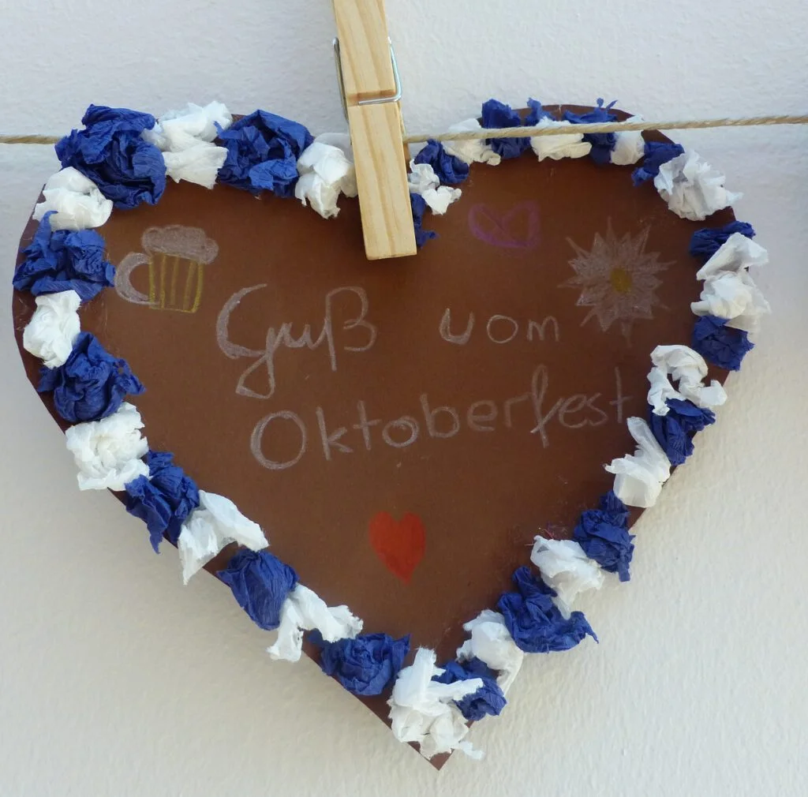

Für Eltern der neuen Erstklässler
Informationen zur Schuleinschreibung und zur Betreuung haben wir für Sie zusammengestellt.
Informationen zur Schuleinschreibung und zur Betreuung haben wir für Sie zusammengestellt.
Zurzeit gibt es keine besonderen Hinweise.
Die genaue Einteilung erfahren Sie bei Ihrer Klassenleitung.
Wir hören Geschichten zum Klimaschutz.
Einblicke
